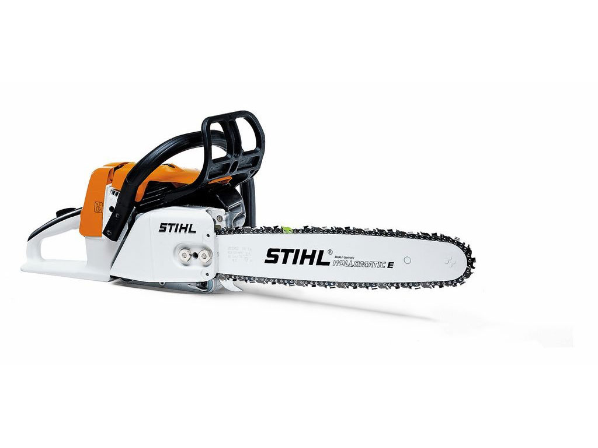

Motorna testera STIHL MS 260
Veoma laka, pokretljiva i snažna profesionalna motorna testera. Vrlo dobra za krčenje, seču slabijih stabala i za radove u komunalnim službama.
Ima veoma dobar odnos snage i mase. Mogućnost nadogradnje makaza za živu ogradu HS 246.

- Preporučena dužina vodilice 37cm/15″
- Zapremina 50.2cm³
- Izlazna snaga 2.6kW/3.5KS
- Težina 4.8kg
- Odnos mase i snage 1.8kg/kW
- Nivo zvučnog pritiska 99dB(A)
- Nivo snage zvuka 113dB(A)
- Vrednost vibracije levo 3.6/desno 4.1 m/s²
- STIHL Oilomatic tip lanca testere .325″ RS
Pogledajte motornu testeru STIHL MS 230
Home